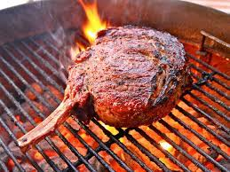

Elliot's Perfect Pan-Seared Steak Recipe

Recipe Summary
Enjoy the best-tasting steak you've ever had with this easy to follow recipe!
Ingredients
- 1 16oz ribeye steak
- Salt and pepper
- Butter
Steps
- Pat steaks dry with paper towels. Season liberally with salt.
Allow to rest at room temperature for at least 40 minutes and up to 2 hours.
Alternatively, place on a plate or on a rack over a baking sheet in the refrigerator overnight.
Remove from refrigerator at least 40 minutes before cooking.
- In a large stainless-steel or cast iron skillet, heat oil over high heat until heavily smoking.
Season steaks with pepper, add to pan, and cook, flipping frequently with tongs until well browned
on all sides (including edges, which you can sear by holding steaks sideways with tongs) and the
internal temperature has reached 110°F (43°C) for rare or 130°F (54°C) for medium
(steak will continue to cook for a bit afterward), 6 to 12 minutes depending on thickness.
- Add butter and optional aromatics to pan and continue to cook, flipping often, for an additional
2 minutes. Remove from pan and let rest in a warm place for at least 5 minutes before serving.